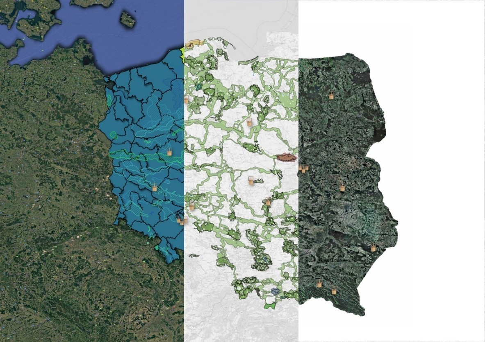
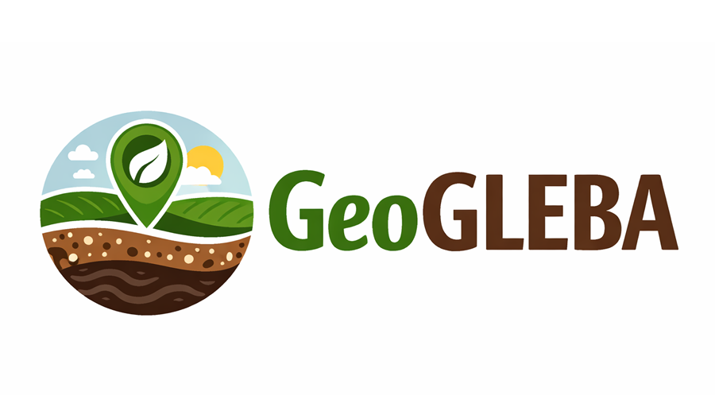
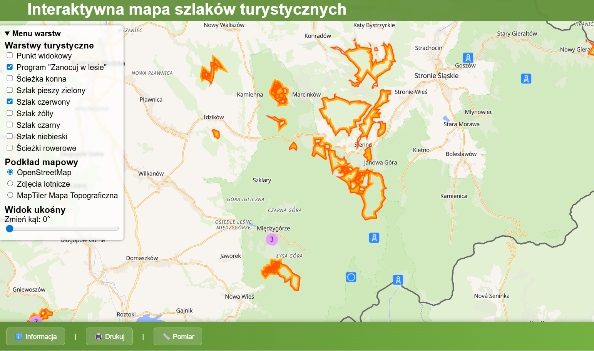
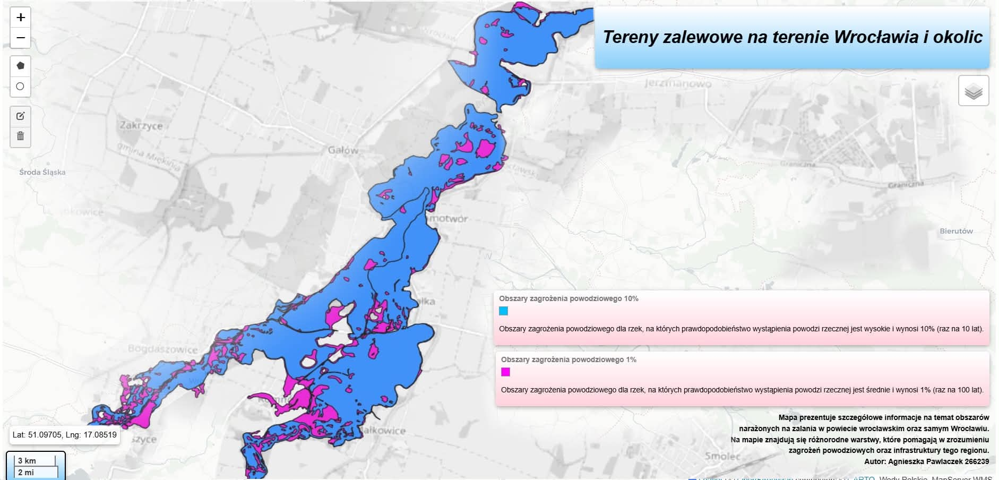

Portfolio
Portfolio prezentujące projekty z zakresu Systemów Informacji Przestrzennej, analiz GIS, geoinformatyki oraz kartografii. Zawiera wybrane realizacje wykonane podczas studiów oraz projektów własnych.
Wybrane Projekty

Mobilny system gromadzenia i wizualizacji danych z zakresu społecznego monitoringu wód podziemnych
Desktopowo-mobilny system gromadzenia i wizualizacji danych w zakresie społecznego monitoringu wód podziemnych. System powstał w ramach mojej pracy inżynierskiej, ocenionej na 5.5.

System geoankiet dla gospodarstw rolnych
Zintegrowane rozwiązanie GIS oparte na bazie PostgreSQL/PostGIS oraz wtyczce QGIS, umożliwiające zbieranie, zarządzanie i analizę danych przestrzennych z gospodarstw rolnych wraz z automatycznym raportowaniem i obliczaniem wskaźników środowiskowych.

Interaktywna mapa szlaków turystycznych
Interaktywna aplikacja WebGIS prezentująca szlaki turystyczne z wizualizacją 3D terenu, obsługą warstw oraz narzędziami pomiaru i generowania wydruku.

Geoportal Tereny zalewowe na terenie Wrocławia i okolic
Mapa prezentuje szczegółowe informacje na temat obszarów
narażonych na zalania w powiecie wrocławskim oraz samym Wrocławiu.
Na mapie znajdują się różnorodne warstwy, które pomagają w zrozumieniu
zagrożeń powodziowych oraz infrastruktury tego regionu.
Umiejętności
• ArcGIS Pro
• QGIS / QField
• Python w GIS / PyQGIS
• SQL / PostGIS
• Analizy przestrzenne
• Kartografia i wizualizacja danych
• JavaScript
• Github
• Analizy przestrzenne i modelowanie danych GIS
• WebGIS (Leaflet, MapLibre, Lizmap)
• Usługi OGC (WMS / WFS)
• Projektowanie baz danych przestrzennych
• Przetwarzanie i integracja danych przestrzennych
• Systemy mobilnego GIS (QField / MerginMaps)
• HTML5 / CSS3
O mnie
Jestem studentką studiów magisterskich na kierunku Geodezja i Kartografii na specjalizacji Systemy Informacji Przestrzennej. Interesuję się analizami GIS, geoinformatyką, automatyzacją procesów przestrzennych oraz tworzeniem aplikacji webowych związanych z danymi przestrzennymi.